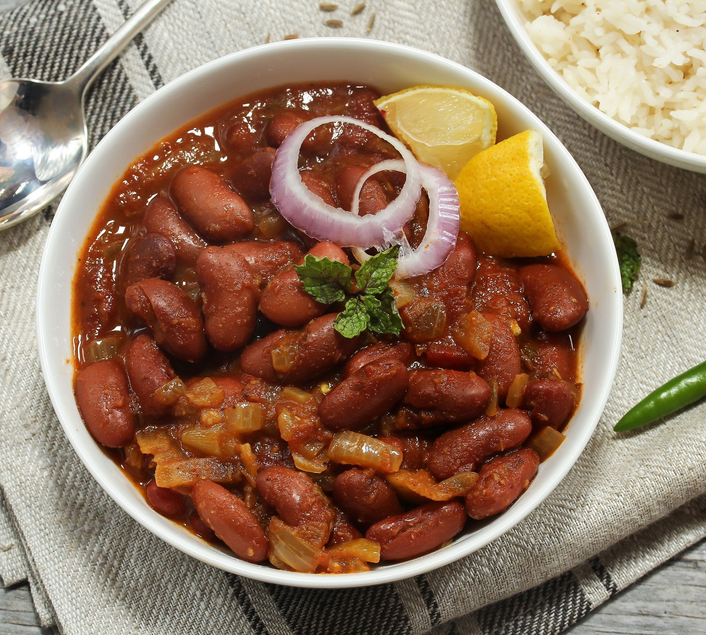

Rajma

Ingredients
Steps
- Pour water
- Cook
Rājmā, also known as rajmah, rāzmā, or lal lobia, is a vegetarian
dish, originating from the Indian subcontinent, consisting of red
kidney beans in a thick gravy with many Indian whole spices, and
is usually served with rice. It is a part o
f the regular diet in Northern India, Nepal and Punjab province
of Pakistan